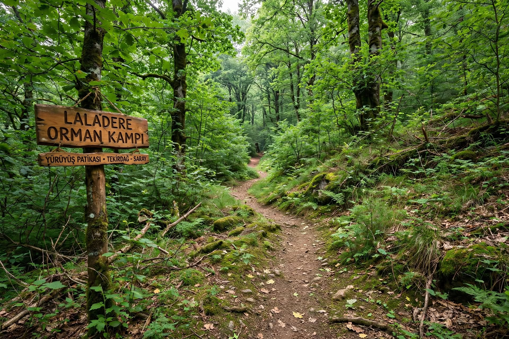

Yolun Bıraktığı İz
Gezi
Gidilen yerlerden çok karşılaşmaların, yerel belleğin ve yolculuğun insanda açtığı yeni bakışların peşine düşüyoruz.

Gala Gölü: Trakya’nın Saklı Doğa Cenneti
Suyun, kuşların ve sessizliğin buluştuğu yer: Gala Gölü’ne görselli bir yolculuk.

Saray Laladere: Ormanın İçinde Yavaşlayan Zaman
Güngörmez’in ormanında yürüyüş, piknik ve sessizlik: Laladere’yi acele etmeden, doğaya iz bırakmadan keşfetmek için bir yol anlatısı.

Bir Yolun Peşinde: Kıyıköy
Kıyıköy’e giden yol, yalnızca bir kıyı kasabasına ulaşmaz; ormanla denizin, gündelik hayatla eski hikâyelerin birbirine karıştığı bir eşiğe çıkar.

Gelibolu’da Rüzgârın İzleri
Gelibolu’da rüzgâr yalnızca havayı hareket ettirmez; denizin tuzunu, kırların kokusunu ve geçmişin ağır belleğini aynı ufukta buluşturur.